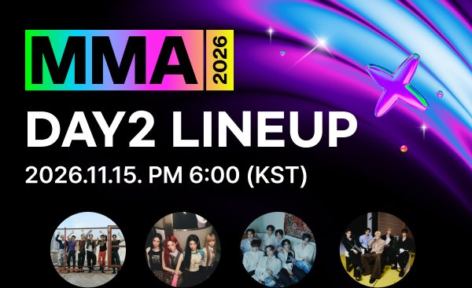
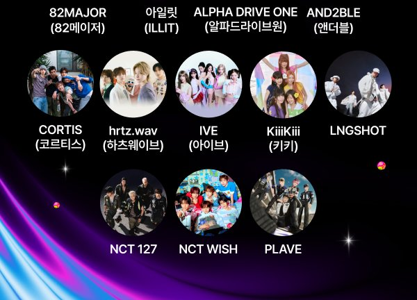

올해 멜론뮤직어워드는 하루가 아니라 이틀이에요. 18회째를 맞은 MMA가 처음으로 '2-SHOW'로 열리면서 출연 팀도 날짜별로 나뉘었어요. 몇 시에 시작하는지, 어느 날 누가 나오는지, 어디서 무료로 볼 수 있는지 한 번에 정리했어요.
언제, 어디서 열리나
11월 14일 토요일과 15일 일요일, 서울 고척스카이돔에서 열려요. 두 날 모두 오후 5시에 레드카펫이 먼저 시작하고, 본 시상식은 오후 6시예요. 올해 슬로건은 'K-POP CONNECT: The New Pulse'예요.
📷 사진 1 자리
▲ 멜론뮤직어워드 2026 공식 라인업 이미지(15일 DAY2) · 사진=카카오엔터테인먼트 제공
14일 토요일, 14팀
첫날에는 에스파, 에이티즈, 드래곤포니, HANA, 하츠투하츠, 아이오아이, 아이딧, 에이엔, NCT DREAM, 리센느, 라이즈, 튜이드, 투어스, 최예나가 나와요.
눈에 띄는 무대는 10년 만에 다시 모이는 아이오아이예요. 과거와 현재, 미래를 담은 무대를 예고했어요. 데뷔 10주년을 맞은 NCT DREAM은 축제를 주제로 한 무대를, 리센느는 서사를 그림처럼 보여 주는 퍼포먼스를 준비했어요.
아이딧과 에이엔은 14명이 함께 서는 합동 무대를 꾸며요. 투어스는 뮤지컬처럼 구성한 'OVERDRIVE'와 마술 퍼포먼스를, 최예나는 무대 위에서 스타일을 실시간으로 바꾸는 무대를 예고했어요.
15일 일요일, 12팀
둘째 날에는 82메이저, 알파드라이브원, 앤더블, 코르티스, 하츠웨이브, 아일릿, 아이브, 키키, 롱샷, NCT 127, NCT 위시, 플레이브가 출연해요.
📷 사진 2 자리
▲ 15일 DAY2 출연 12팀 공식 라인업 · 사진=카카오엔터테인먼트 제공
아이브는 데뷔 초기 곡들을 새로 구성한 세트리스트를 준비했어요. 아일릿은 'It's Me' 무대에서 의문의 인물을 쫓는 '체포 작전'을 펼치는데, 뮤직비디오에 나온 배우 송강 대신 누가 등장할지가 관심사예요.
데뷔 10주년인 NCT 127은 지난 10년을 잇는 무대를, 플레이브는 우주를 떠올리게 하는 연출과 함께 공연 끝에 깜짝 선물을 예고했어요. 하츠웨이브는 악기 라이브, 82메이저는 여섯 멤버가 모두 참여하는 사이퍼를 준비했어요.
어디서 보나, 무료로 볼 수 있나
국내에서는 멜론 앱·웹과 웨이브에서 생중계해요. 웨이브는 OTT 독점 중계라, 무료 이용자도 모바일·PC·TV 앱에서 HD 화질로 레드카펫과 본식을 볼 수 있어요. 생중계 중에 첫 무대부터 돌려 보는 '퀵VOD'가 있고, 끝난 뒤에는 4K 다시보기가 차례로 올라와요.
해외에서는 일본 유넥스트(U-NEXT), 대만 TVBS42·캐치플레이플러스에서 중계하고, 그 밖의 지역은 1theK와 멜론 유튜브 채널에서 볼 수 있어요.
멜론 라이브로 본다면 이벤트도 챙길 만해요. 라이브 페이지 위쪽의 '라이브 알림받기'를 누르고 본방송 중 채팅을 남기면, 출연 아티스트의 '멜뮤네컷' 사진을 추첨으로 받을 수 있어요. 이틀 모두 참여하면 당첨 확률이 올라가요.
정리하면서 가장 눈에 띈 건 이틀로 나뉘면서 날짜마다 색깔이 꽤 달라졌다는 점이에요. 첫날은 아이오아이 재결합과 NCT DREAM 10주년처럼 '돌아보는' 무대가, 둘째 날은 코르티스·롱샷 같은 신인과 NCT 127 10주년이 함께 있어요. 보고 싶은 팀이 어느 날 나오는지만 먼저 확인해도 시간을 아낄 수 있어요.
멜론뮤직어워드 2026은 14일과 15일 오후 6시(레드카펫 오후 5시)에 시작하고, 멜론과 웨이브에서 무료로 생중계돼요.

